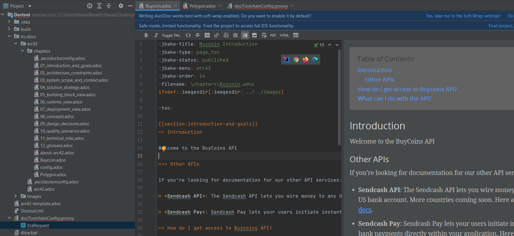
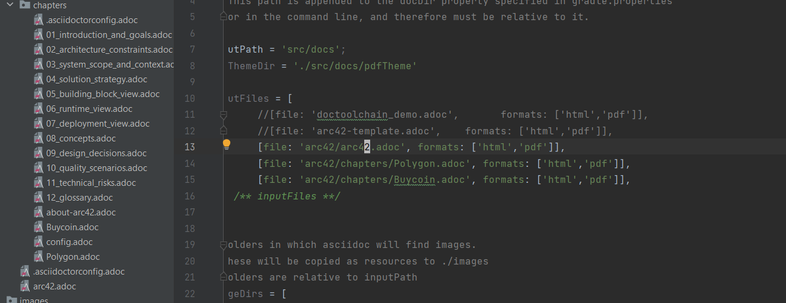
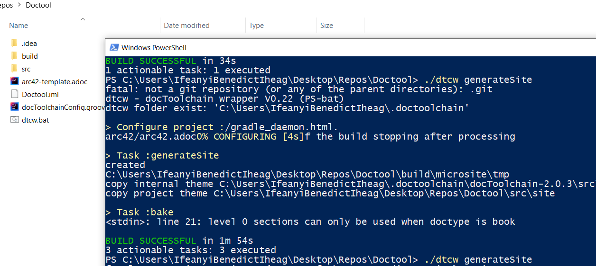

curl -Lo dtcw.bat doctoolchain.github.io/dtcw.bat
Building Docs with docToolchain: A Quickstart Guide
This guide explains how to use docToolchain to build great docs using the docs-as-code methodology. You’ll get from zero to hero in only a few steps:
-
Installing the tool.
-
Setup and configuration.
-
Building your docs.
-
Publishing docs to HTML.
-
Deploying your docs.
What Is Docs-as-Code?
Docs-as-code means treating your docs just like developers treat code. This approach is perfect for technical teams because everyone writes docs using similar tools, practices, and workflows.
The docs-as-code approach takes all the things we love about software development and makes them relevant to docs:
-
Version control using Git.
-
Collaboration and review.
-
Consistent design.
-
Automated testing, building, and delivery.
-
Issue tracking.
-
Use of plain-text markup (Markdown, reStructuredText, AsciiDoc).
In addition to the above, docs-as-code helps build a culture where developers and technical writers can easily work side-by-side using similar tools.
What is docToolchain?
docToolchain is an open-source documentation generation tool that uses the docs-as-code approach. It was initially developed by Ralf D. Müller and now has over 70 contributors. It takes markup files and uses them to create technical documentation in several formats, including websites, PDFs, and presentations. Because of docToolchain’s underlying Gradle build system, it can provide automation, which is very important for writing and maintaining robust technical documentation.
Before You Begin
-
You will need an integrated development environment (IDE) or text editor. In this guide, we’ll use the community version of IntelliJ IDEA which is free to download.
-
You will need to be comfortable working with the command line.
Now, let’s get started!
Installing docToolchain
You can install docToolchain in three different environments. More information can be found in our comprehensive installation documentation. In this guide, we’ll install docToolchain in a Windows environment.
Install docToolchain by running the following command in your command prompt (cmd.exe).
Next, verify the installation by running the following command:
./dtcw.ps1 tasks --group=doctoolchainThis command shows all docToolchain tasks available and verifies that the installation was successful. The installation is an incremental process, so it takes a while.
Setting Up docToolchain
After installation, the first step is to get the arc42 template in AsciiDoc format. The arc42 template will provide you with a good starting point for your documentation and some basic content. Get the template by running this command:
/dtcw.ps1 downloadTemplateNext, we’ll render the template to HTML and PDF by running these commands:
./dtcw.ps1 generateHTML
./dtcw.ps1 generatePDFBuilding Your First Docs with docToolchain
You now have almost everything in place to start building docs with docToolchain. For this exercise, we will replicate the Introduction pages of the BuyCoins API documentation and Polygon documentation.
First, you’ll need to know more about AsciiDoc. AsciiDoc is a markup language. It is straightforward, allows for customization, and is similar to Markdown. Head over to the AsciiDoc documentation and take a look at the cheat sheet to learn how to write AsciiDoc. It would also make things easier if you use AsciiDoc Viewer as an online editor as you practice.
You will also need an IDE. In this guide, we use the community version of IntelliJ IDEA When you open docToolchain in your IDE, it will recognize the AsciiDoc file extension and ask you to install the IntelliJ IDEA Asciidoctor plugin. This plugin provides support for the AsciiDoc markup language, as well as a two-pane AsciiDoc editor based on Asciidoctor that includes a live preview.
And finally, you can use AsciiDoc to write your documentation. You can find the source code for the AsciiDoc format of the BuyCoins API and the Polygon documentation in GitHub.

Creating Your First HTML Site
You’re now ready to create your first HTML site using the files you
created. But first, you need to make a change to the
docToolchainConfig.groovy file.
To do this, open the docToolchainConfig.groovy file in your IDE. Once
open, add the following after line 13:
[file: 'arc42/chapters/Polygon.adoc', formats: ['html','pdf']],
[file: 'arc42/chapters/Buycoin.adoc', formats: ['html','pdf']],`

Open a command prompt in your docToolchain folder and run this command:
|./dtcw.ps1 generateSite
Once the command has been executed, you will find your output in
index.html which is located at
Doctool\build\microsite\output\index.html in your docToolchain folder.
Here’s what the final output looks like:

You can do many more things with docToolchain beyond the static site
generator, using other features like exportExcel and generatePDF.
Look out for future guides and tutorials!
Deploying your Docs
You can use your static HTML sites to deploy your documentation wherever you want, just like you would with any static site. However, there are various ways to achieve this. One of the easiest is to use GitHub Pages or Netlify.
GitHub Pages is a static site hosting service that takes your source codes directly from a GitHub repository, runs them through a build process, then publishes a website. Your site will be hosted on GitHub’s github.io domain or your own custom domain. Learn more by reading the documentation.
On the other hand, Netlify allows you to deploy your application
automatically in seconds by running the deploy command on every branch
push. First, create a Netlify account, link it to your GitHub account,
then select the repository. You then specify your build command as well
as the destination folder. This
documentation
will teach you how to do that.
Summary and Next Steps
In this guide, you learned about docs-as-code, how to install docToolchain, and how to build a simple document. You also learned how simple it is to render a static site with docToolchain.
So, what should your next steps be? When it comes to docToolchain,
there’s a whole universe to discover! In upcoming tutorials, you’ll
learn about the different features of docToolchain and get familiar with
other tasks like exportExcel and generatePDF.
Join Our Community
docToolchain is an open-source documentation generation tool that makes it easy to create and maintain comprehensive technical documentation. Consider making a contribution to the project or becoming a sponsor.
Feedback
Was this page helpful?
Glad to hear it! Please tell us how we can improve.
Sorry to hear that. Please tell us how we can improve.